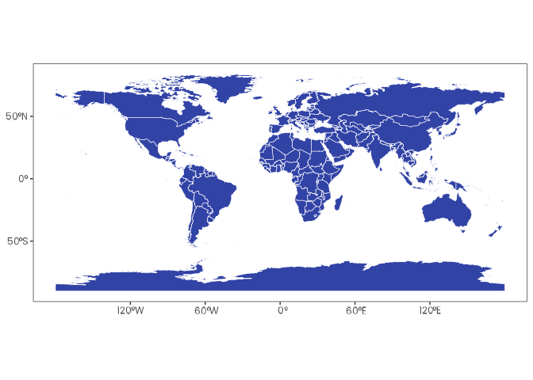
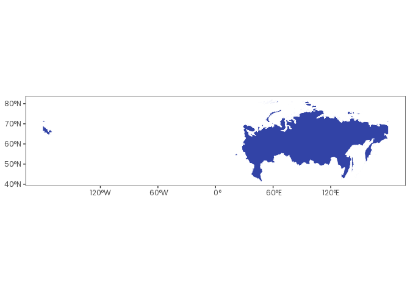
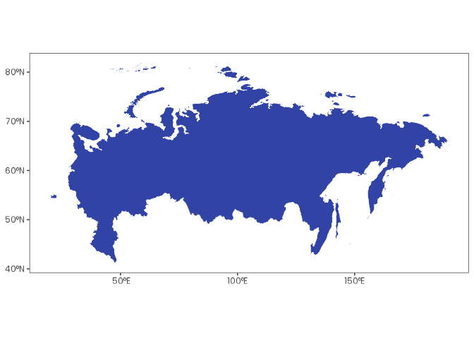

Overview
orbis is an R package with tools to simplify spatial data analysis. It provides an intuitive interface that follows tidyverse principles and integrates seamlessly with the tidyverse ecosystem.
If you find this project useful, please consider giving it a star!

The continuous development of
orbisdepends on community support. If you find this project useful, and can afford to do so, please consider becoming a sponsor.

Installation
You can install orbis using the remotes package:
# install.packages("remotes")
remotes::install_github("danielvartan/orbis")Usage
orbis is equipped with several functions to help with your analysis, such as:
-
shift_and_rotate(): Shift and rotate aSpatVectoror aSpatRaster -
remove_unique_outliers(): Remove unique outliers from raster files -
sidra_download_by_year(): Download and aggregate data by year from SIDRA API (to avoid overloading) -
worldclim_download(): Download WorldClim data -
worldclim_to_ascii(): Convert WorldClim GeoTIFF files to Esri ASCII raster format
Here are some examples of usage.
shift_and_rotate()
shift_and_rotate() was developed to simplify shifting and rotating spatial data, especially for rasters and vectors that cross the International Date Line (e.g. the Russian territory).
Visualize the World Vector
world_vector |>
ggplot() +
geom_spatvector(fill = "#3243A6", color = "white")
Visualize the Country Vector
russia_vector |>
ggplot() +
geom_spatvector(fill = "#3243A6", color = "white")
Shift and Rotate the Country Vector 45 Degrees to the Left
russia_vector |>
shift_and_rotate(-45) |>
ggplot() +
geom_spatvector(fill = "#3243A6", color = "white")
remove_unique_outliers()
remove_unique_outliers() was developed to simplify the removal of abnormal values in raster files. It can be used with GeoTIFF and Esri ASCII raster formats.
Create a Fictional Esri ASCII File
asc_content <- c(
"ncols 5",
"nrows 5",
"xllcorner 0.0",
"yllcorner 0.0",
"cellsize 1.0",
"NODATA_value -9999",
"1 2 3 4 5 ",
"6 7 8 9 10 ",
"11 12 1000 14 15 ", # Extreme outlier (1000)
"16 1 18 19 20 ",
"21 22 23 24 25 "
)
file <- tempfile(fileext = ".asc")
asc_content |> write_lines(file)Visualize Values Before remove_unique_outliers()
file |> read_stars() |> pull(1) |> as.vector()
#> [1] 1 2 3 4 5 6 7 8 9 10 11 12 1000 14
#> [15] 15 16 1 18 19 20 21 22 23 24 25Visualize Values After remove_unique_outliers()
file |> remove_unique_outliers()
file |> read_stars() |> pull(1) |> as.vector()
#> [1] 1 2 3 4 5 6 7 8 9 10 11 12 NA 14 15 16 1 18 19 20 21 22 23 24
#> [25] 25Click here to see the full list of orbis functions.
Citation
If you use this package in your research, please cite it to acknowledge the effort put into its development and maintenance. Your citation helps support its continued improvement.
citation("orbis")
#> To cite orbis in publications use:
#>
#> Vartanian, D. (2026). orbis: Spatial data analysis tools [Computer
#> software]. https://doi.org/10.5281/zenodo.18240800
#>
#> A BibTeX entry for LaTeX users is
#>
#> @Misc{,
#> title = {orbis: Spatial data analysis tools},
#> author = {Daniel Vartanian},
#> year = {2026},
#> doi = {10.5281/zenodo.18240800},
#> }License

Copyright (C) 2025 Daniel Vartanian
orbis is free software: you can redistribute it and/or modify it under the
terms of the GNU General Public License as published by the Free Software
Foundation, either version 3 of the License, or (at your option) any later
version.
This program is distributed in the hope that it will be useful, but WITHOUT ANY
WARRANTY; without even the implied warranty of MERCHANTABILITY or FITNESS FOR A
PARTICULAR PURPOSE. See the GNU General Public License for more details.
You should have received a copy of the GNU General Public License along with
this program. If not, see <https://www.gnu.org/licenses/>.Contributing

Contributions are always welcome! Whether you want to report bugs, suggest new features, or help improve the code or documentation, your input makes a difference.
Before opening a new issue, please check the issues tab to see if your topic has already been reported.
You can also support the development of orbis by becoming a sponsor.
Click here to make a donation. Please mention orbis in your donation message.